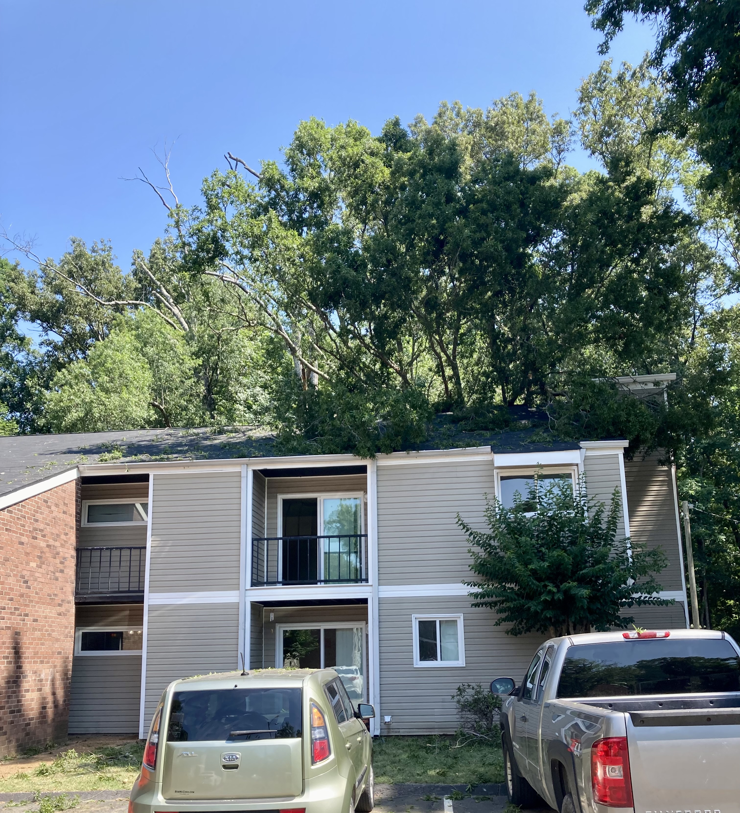
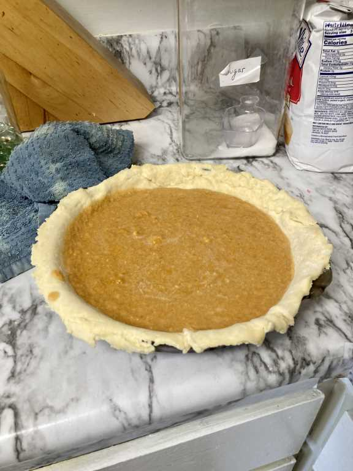
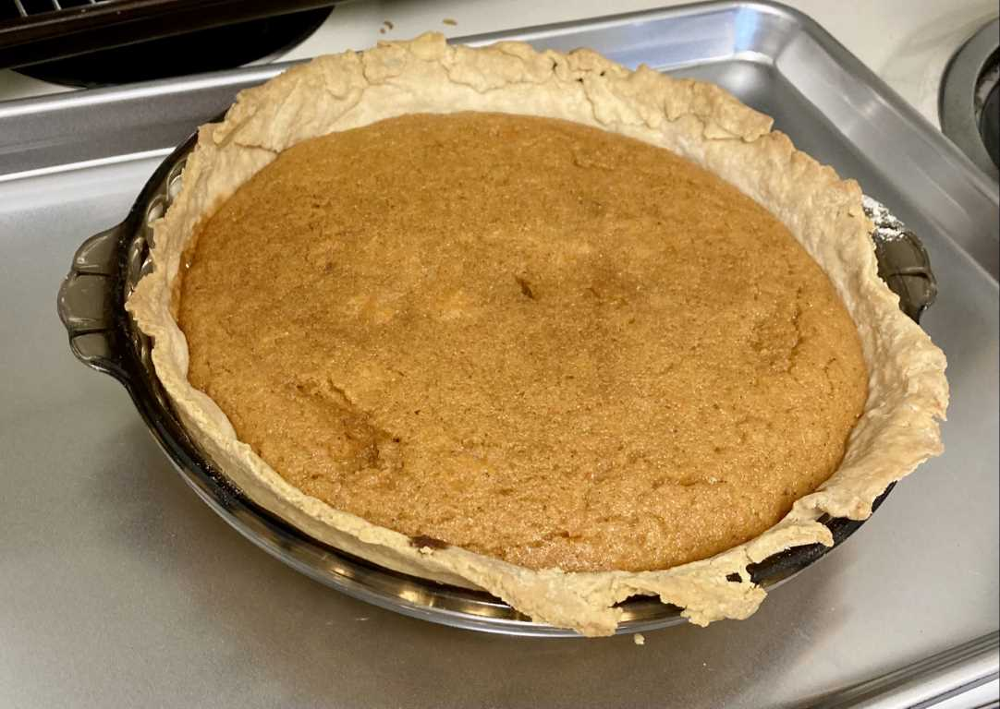

Pie 1: Sweet Potato
2023-06-27Filling recipe from AllRecipes.com.
Crust recipe from addapinch.com.
On Tuesday, June 27th, Katie Beth and I heard a tree fall on our apartment building, moved half our belongings to a storage unit, and signed to vacate our unit in five days. Also, we made a sweet potato pie.
At 7 AM, we awoke to the sound of a tree from the wooded lot behind the building crashing through the roof of the unit above. After scrambling outside to assess the stability of the tree, we were told to start packing up to move into another unit of the apartment complex, since the roof was no longer going to stop rain from flooding our bedroom. Instead, we asked and received approval to vacate our apartment and end our year-long lease.
“Hold your horses! Back up! Why would you want to end your lease rather than move to another unit?” you might be saying at this point, and for good reason, considering how few people are actively hoping for a tiny natural disaster to occur to them on any given weekday. The answer lies in my recent and unexpected admission into the University of Missouri’s medical school, a school located over 300 miles from our apartment.
 